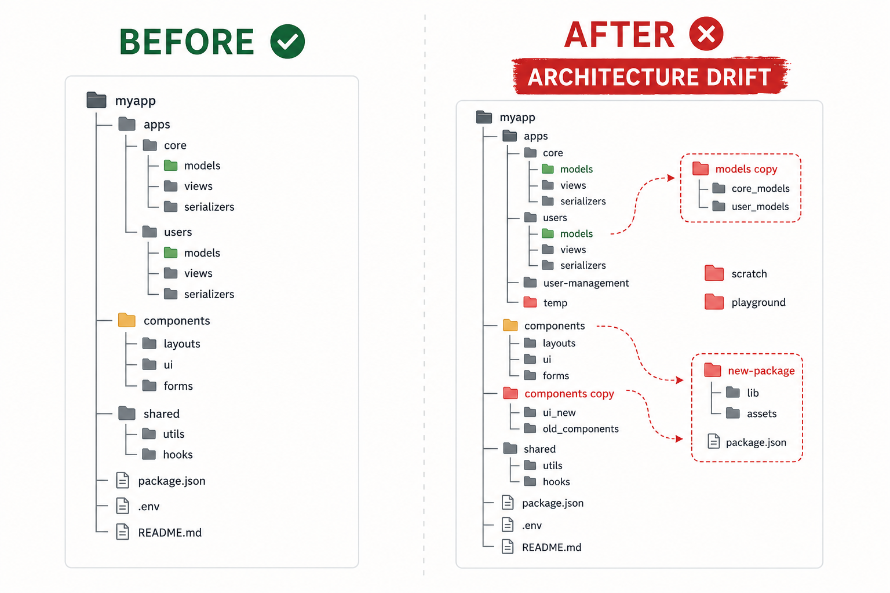
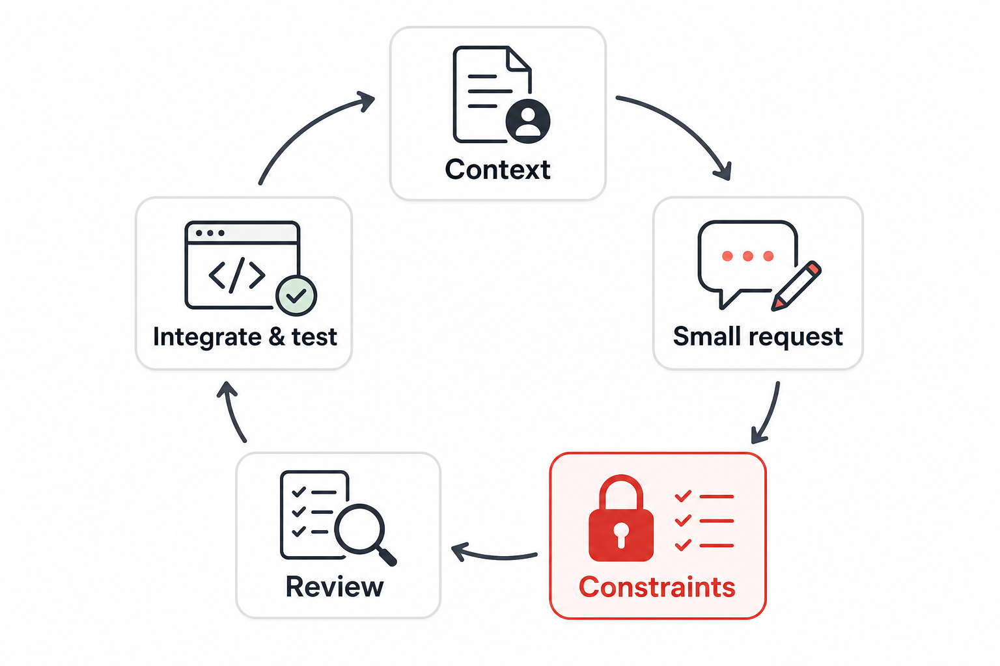

AI is strongest when it receives constraints. It is dangerous when it invents structure, dependencies, and patterns your app does not use.
Prompts ask for whole features instead of small changes.
Generated code adds new folders, models, or packages needlessly.
Students accept code they cannot explain.
You stay responsible for architecture and testing — the AI does not.
Model, view/component, naming pattern, goal.
One behavior at a time.
Tell AI what not to change.
Read the diff.
Run the app and prove it.
Better prompts name the existing code and set boundaries.

One chart from existing order data.
Validation logic — not business decisions.
UI states before recommendation algorithms.
Ask for code that uses existing data — not code that invents new models.
Which generated file can you explain line by line?

Context · Small request · Constraints · Review the diff · Integrate and test.